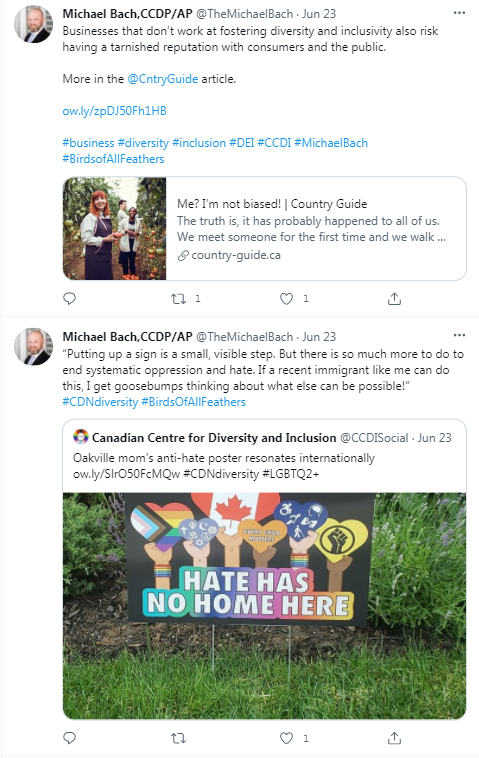

Globo Homo Schlomo in Accounting - KPMG
May 13th, 2021
This is an old article that I never got around to actually finishing. You can see that I clearly started this in May, but am only now publishing this in June. It has become far more relevant recently.
When studying the "SFU Equity Diversity and Inclusion," program, where 10% of their students are selected from the vague, but probably anti-White criterion of "diverse," as measured by their "diversity meter," I stumbled upon the Canadian Centre for Diversity and Inclusion, or CCDI. So what is this CCDI, who founded it, and what does it do?
Well it turns out it was founded by one Michael Bach, who conveniently has a biography of himself on the Canadian Centre for Diversity and Inclusion.
CCDI:
TDC_ARTICLE_START
Michael Bach, CCDP/AP
Founder and Chair of the Board of Directors
Michael Bach is nationally and internationally recognized as a thought leader and subject matter expert in the fields of diversity, inclusion and employment equity, bringing a vast knowledge of leading practices in a live setting to his work. He has deep experience in strategy development, stakeholder engagement, training and development, research, solution development and execution, employee engagement, data analytics, measurement and diversity scorecards, targeted recruiting strategies, marketing and communications, Employee Resource Groups, Diversity Councils, and diversity related legislation (Employment Equity Act, AODA, etc.) among other skills and experiences related to field of diversity and inclusion.
TDC_ARTICLE_STOP
Man, I thought I was padding my resume when applying for minimum wage jobs as a 14 year old. "Managed trays of donuts," "took on personal responsibility as hockey alternate captain." My brain needs a second to come down from the diversity diversity diversity Diversity diversity repetition. I will also have to now look up the EEA and AODO acts.
Former Accountant Michael Bach
TDC_ARTICLE_START
Prior to taking on this role he was the National Director of Diversity, Equity and Inclusion for KPMG in Canada, a role he created and held for the past 7 years. Additionally, Michael completed a 2½ year secondment as the former Deputy Chief Diversity Officer for KPMG International.
TDC_ARTICLE_STOP
"What's that, more diversity. Excellent."
BTW, keep in mind, Amazon has been on record claiming that they increase worker "diversity," specifically so as to destroy worker cohesion, and destroy unionization efforts. So capitalists, billionaires, whatever you want to call the Corporate part of the Corporate-State Complex, absolutely love diversity. It means they can destroy and exploit their workers much more effectively.
TDC_ARTICLE_START
At KPMG Michael was responsible for the overarching diversity strategy for the firm’s operations in Canada, including the development and implementation of all diversity related programs and initiatives. During his tenure, KPMG received several prestigious diversity related awards – including being named one of Canada’s Top Employers for Diversity and one of Canada’s Best Employers for New Canadians. KPMG is the only organization that has won both awards in all five years they have been awarded.
TDC_ARTICLE_STOP
 Uhm. Multiple awards for diversity? Multiple, PRESTIGIOUS awards? Canada's Top Employers for Diversity. My brain is just a little baffled at these people. You'll see in my next article that KPMG is also a criminal enterprise, but we'll get there later.
TDC_ARTICLE_START
Over the course of his career, Michael has received repeated recognition for his work, including being named as one of the Women of Influence’s 2012 Canadian Diversity Champions. In 2011 he was honoured as the Diversity Champion with the Catalyst Canada Honours Human Resources/Diversity Leader award. He also received the Women of Influence’s 2011 Canadian Diversity Champions, the 2011 Inspire Award as LGBTQ Person of the Year and the 2011 Out on Bay Street Leaders to be Proud of LGBT Advocate Workplace Award.
Over the course of his career, Michael has received repeated recognition for his work, including being named as one of the Women of Influence’s 2012 Canadian Diversity Champions. In 2011 he was honoured as the Diversity Champion with the Catalyst Canada Honours Human Resources/Diversity Leader award. He also received the Women of Influence’s 2011 Canadian Diversity Champions, the 2011 Inspire Award as LGBTQ Person of the Year and the 2011 Out on Bay Street Leaders to be Proud of LGBT Advocate Workplace Award.
TDC_ARTICLE_STOP
Uhm. Multiple awards for diversity? Multiple, PRESTIGIOUS awards? Canada's Top Employers for Diversity. My brain is just a little baffled at these people. You'll see in my next article that KPMG is also a criminal enterprise, but we'll get there later.
TDC_ARTICLE_START
Over the course of his career, Michael has received repeated recognition for his work, including being named as one of the Women of Influence’s 2012 Canadian Diversity Champions. In 2011 he was honoured as the Diversity Champion with the Catalyst Canada Honours Human Resources/Diversity Leader award. He also received the Women of Influence’s 2011 Canadian Diversity Champions, the 2011 Inspire Award as LGBTQ Person of the Year and the 2011 Out on Bay Street Leaders to be Proud of LGBT Advocate Workplace Award.
Over the course of his career, Michael has received repeated recognition for his work, including being named as one of the Women of Influence’s 2012 Canadian Diversity Champions. In 2011 he was honoured as the Diversity Champion with the Catalyst Canada Honours Human Resources/Diversity Leader award. He also received the Women of Influence’s 2011 Canadian Diversity Champions, the 2011 Inspire Award as LGBTQ Person of the Year and the 2011 Out on Bay Street Leaders to be Proud of LGBT Advocate Workplace Award.
TDC_ARTICLE_STOP
 Oh my god it just never ends. Just the sheer tedium of the privileged class, it simply makes my eyes roll. I have to admit, I drift, I just sort of skim this kind of shit now and move on.
However, the important takeaway you should have gotten there is that he himself is a mentally ill pervert who loves mens assholes. Or maybe loves penis in his asshole, it's not really clear which one he is. So Globo Homo Schlomo indeed, and I certainly hope the reader at this point is not surprised in the slightest by an international accounting firm being full of homophiliacs pushing anti-White policies.
Remember this the next time you hear some Cuckservative doing the whole "muh capitalism good," routine.
Oh my god it just never ends. Just the sheer tedium of the privileged class, it simply makes my eyes roll. I have to admit, I drift, I just sort of skim this kind of shit now and move on.
However, the important takeaway you should have gotten there is that he himself is a mentally ill pervert who loves mens assholes. Or maybe loves penis in his asshole, it's not really clear which one he is. So Globo Homo Schlomo indeed, and I certainly hope the reader at this point is not surprised in the slightest by an international accounting firm being full of homophiliacs pushing anti-White policies.
Remember this the next time you hear some Cuckservative doing the whole "muh capitalism good," routine.

"He said capitalism is based!"
TDC_ARTICLE_START
In 2010 Michael was honoured by the Toronto Immigrant Employment Council with the 2010 IS Award Canadian HR Reporter Individual Achievement Award. Additionally, in 2009, Michael was honoured as one of the winners of the KPMG CEO Community Excellent Award for his contribution to community.
Under Michael’s leadership, CCDI has received numerous awards, including winning Canadian HR Reporter's Readers' Choice Award in the category of Diversity/Employment Equity Consultant in 2016, 2017, 2018 and 2019.
Michael has a Post Graduate Certificate in Diversity Management from Cornell University and also holds the Cornell Certified Diversity Professional, Advanced Practitioner (CCDP/AP) designation.
TDC_ARTICLE_STOP
A... "Post Graduate Certificate in Diversity Management from Cornell University." I mean I could quote the rest, but I honestly did not know that there was such a thing.
Anyway, so mentally ill pervert with a fetish for mens assholes spends his career pushing anti-White and anti-Normal policies for KPMG.
Weirdly his CCDI page directs to a non-used twatter account of his. He has another which he links, but it got suspended.
If you have a twitter account @DiversityDudeMB, and you get suspended, you have to be pushing some undenable anti-White hate speech, or basically be repeatedly advocating for pedophilia. Twatter won't say which one, but I just wanted to mention that, in case you think that this homophiliac is a really great person or whatever.
His active twatter account has 10.4k followers, and follows over 8k other accounts. Which seems fairly impressive, until you see the actual engagement that his tweets get.

I picked tweets from a day ago, because I wanted to make sure that everyone can see this guys tweets get absolutely no play. He has no real organic base of support, and no one normal gives a fuck. However, he is connected and inserted into the privileged class, which is, for now, what's really important.

Uhm. Multiple awards for diversity? Multiple, PRESTIGIOUS awards? Canada's Top Employers for Diversity. My brain is just a little baffled at these people. You'll see in my next article that KPMG is also a criminal enterprise, but we'll get there later.
TDC_ARTICLE_START
Over the course of his career, Michael has received repeated recognition for his work, including being named as one of the Women of Influence’s 2012 Canadian Diversity Champions. In 2011 he was honoured as the Diversity Champion with the Catalyst Canada Honours Human Resources/Diversity Leader award. He also received the Women of Influence’s 2011 Canadian Diversity Champions, the 2011 Inspire Award as LGBTQ Person of the Year and the 2011 Out on Bay Street Leaders to be Proud of LGBT Advocate Workplace Award.
Over the course of his career, Michael has received repeated recognition for his work, including being named as one of the Women of Influence’s 2012 Canadian Diversity Champions. In 2011 he was honoured as the Diversity Champion with the Catalyst Canada Honours Human Resources/Diversity Leader award. He also received the Women of Influence’s 2011 Canadian Diversity Champions, the 2011 Inspire Award as LGBTQ Person of the Year and the 2011 Out on Bay Street Leaders to be Proud of LGBT Advocate Workplace Award.
TDC_ARTICLE_STOP
Oh my god it just never ends. Just the sheer tedium of the privileged class, it simply makes my eyes roll. I have to admit, I drift, I just sort of skim this kind of shit now and move on.
However, the important takeaway you should have gotten there is that he himself is a mentally ill pervert who loves mens assholes. Or maybe loves penis in his asshole, it's not really clear which one he is. So Globo Homo Schlomo indeed, and I certainly hope the reader at this point is not surprised in the slightest by an international accounting firm being full of homophiliacs pushing anti-White policies.
Remember this the next time you hear some Cuckservative doing the whole "muh capitalism good," routine.